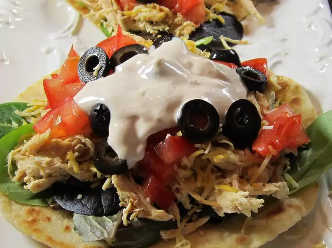

Ranch Chicken Tacos

Description
These ranch chicken tacos are a great change from regular Mexican-style tacos. A quick, cool summer dinner made with leftover rotisserie chicken. Naturally, you can use any type of chicken cooked the way you like; just be sure to shred it for real tacos.
Ingredients
- ½ cup ranch dressing
- ¼ cup reduced-fat sour cream
- 1 (1 ounce) packet taco seasoning mix, divided
- 1 tablespoon mild chunky salsa
- 2 cups shredded rotisserie chicken
- 8 (6 inch) corn tortillas
- shredded lettuce
- 1 tomato, chopped
- 4 green onions, sliced
- 1 (4 ounce) can sliced black olives
- 1 avocado - peeled, pitted and diced (optional)
- 1 cup shredded Colby-Monterey Jack cheese
Steps
- Combine ranch dressing, sour cream, 1 teaspoon taco seasoning, and salsa in a small bowl. Cover and refrigerate until serving.
- Toss chicken with remaining taco seasoning. Cover the bowl loosely with wax paper or plastic wrap. Microwave the chicken until heated through, about 2 to 3 minutes.
- Warm tortillas in a skillet for about a minute on each side to make them pliable.
- Place a scoop of chicken on each tortilla.
- Top with shredded lettuce, chopped tomato, sliced green onion, sliced black olives, diced avocado (if using), shredded Colby-Monterey Jack cheese, and a spoonful of the ranch dressing mixture.